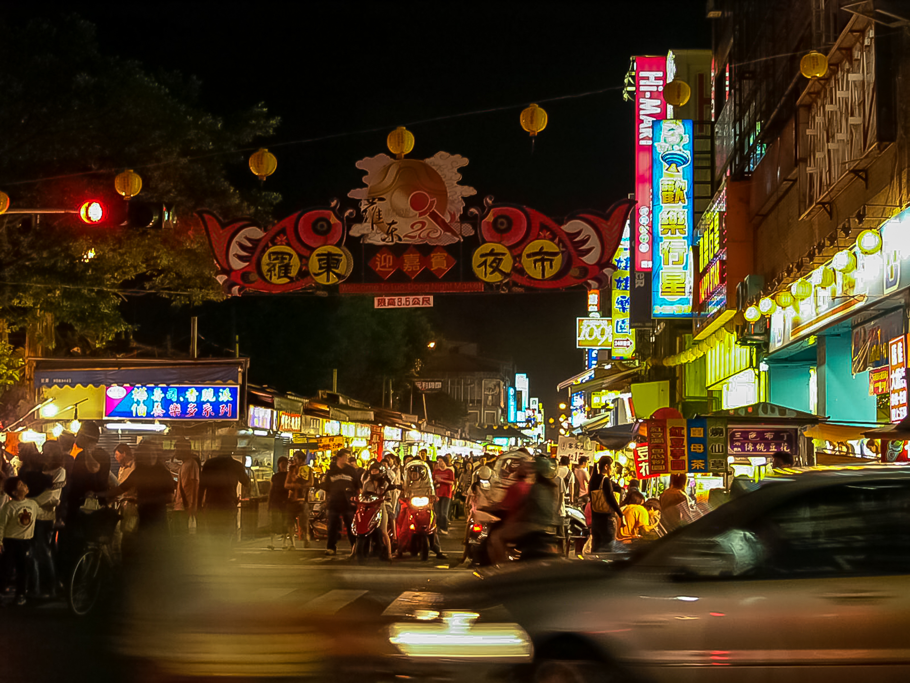
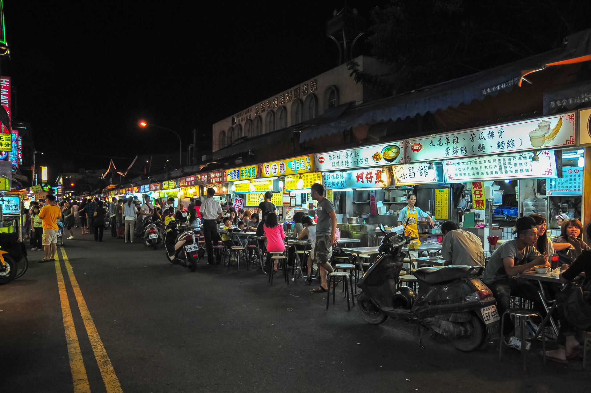
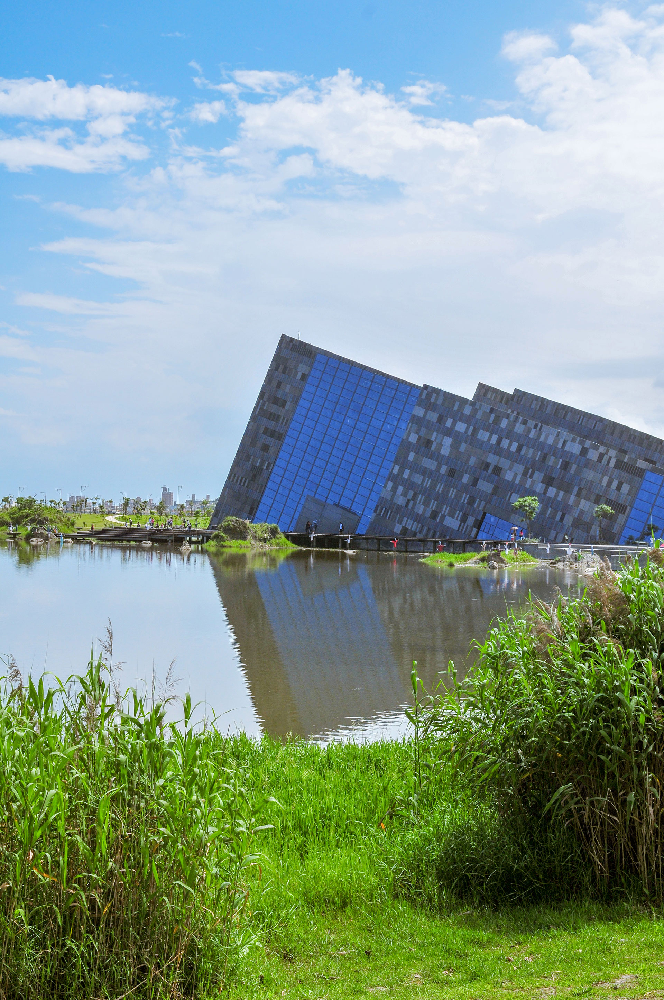
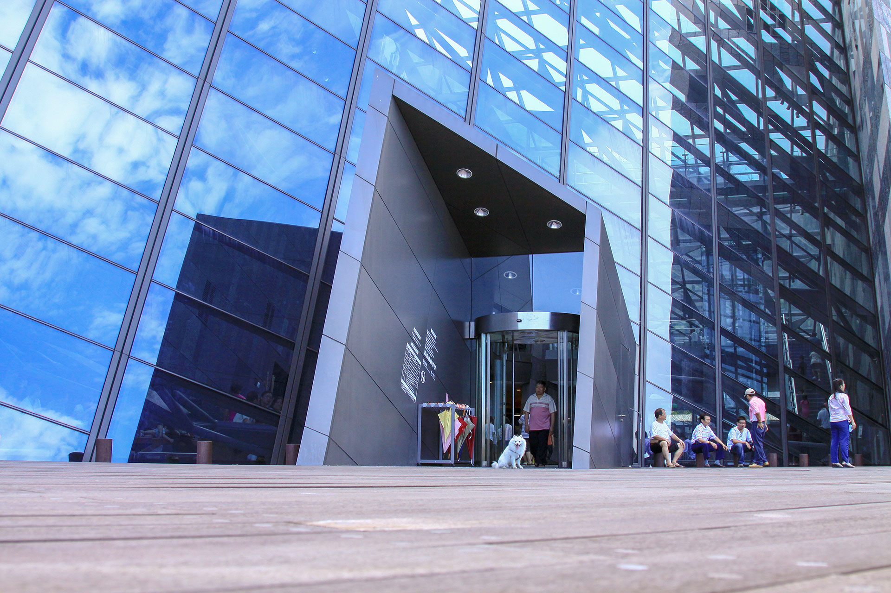

羅東夜市
極具人情味的羅東觀光夜市有許多傳統美食小吃，從日頭西晒開始，燈便通夜亮麗明晃，熙來攘往的人群，自四面八方攢聚而來，展開熱鬧的一夜。
羅東夜市在2010年交通部觀光局舉辦的夜市選拔，獲選成為最友善夜市（與基隆廟口夜市並列）。而在每年暑假都會舉行的羅東藝穗節，
是結合在地藝術和文創產業所衍伸出的藝術嘉年華，若您在夏季來到羅東可不要錯過囉～羅東夜市的小吃美食不勝枚舉，熱情喧鬧的氣氛下，香味撲鼻而來，
令人垂涎慾滴：吃冰，您會想到雪花冰；熱食，您會想到羊肉湯；還有許多別具特色的，如：三星卜肉、糕渣、三星蔥蔥油餅、包心粉圓、花生粉捲冰淇淋、一串心、
龍鳳腿……等，都是讓人直接聯想到就會口水直流，食指大動的一等美食。
開放時間：每日下午15:00-晚上24:00
地 址：宜蘭縣羅東鎮興東路與民權路口
服務專線：無


羅東夜市
蘭陽博物館
光影折射變換間，文化的傳承蘭陽博物館－其外部建築景觀乃採用單面山造型的斜屋頂為主體風格，館外周圍保留烏石礁遺址溼地生態公園，本著「與環境共生」、「
與自然融合」的精神，呈現溼地豐富生態與低海拔原生樹種及森林景觀等多樣的自然生態環境；館內設有展示中心、教育資源中心、蘭陽市集等區，以保存、典藏、
研究及展示等方式，充分地展現出宜蘭當地多元獨特、豐富生動的人文風情與自然生態。提供到此參訪的遊客或是民眾們能夠更進一步地了解宜蘭當地的風俗民情。
宜蘭是一座博物館，蘭博是認識這座博物館的窗口蘭陽博物館的立館宗旨就是這句話「宜蘭是一座博物館，蘭博是認識這座博物館的窗口」。宜蘭在地有著與眾不同的文化沿革，
藉由蘭陽博物館的濃縮，這裡收集了宜蘭先人們累積到今時的智慧，大朋友小朋友都很適合來到這裡，以輕鬆的心情瀏覽這些文化傳承的精華。除了博物館內的展覽，
館外的設計也是別出心裁，不少新人會將此地選作婚紗拍攝的地點，四周的靜水環繞著山狀的博物館，倒印在水上的山狀建築仿彿另一邊的顛倒世界！
開放時間：上午09:00~下午17:00 每周三公休
地 址：宜蘭縣頭城鎮青雲路三段750號
服務專線：+886-3-9779700


田寮月世界